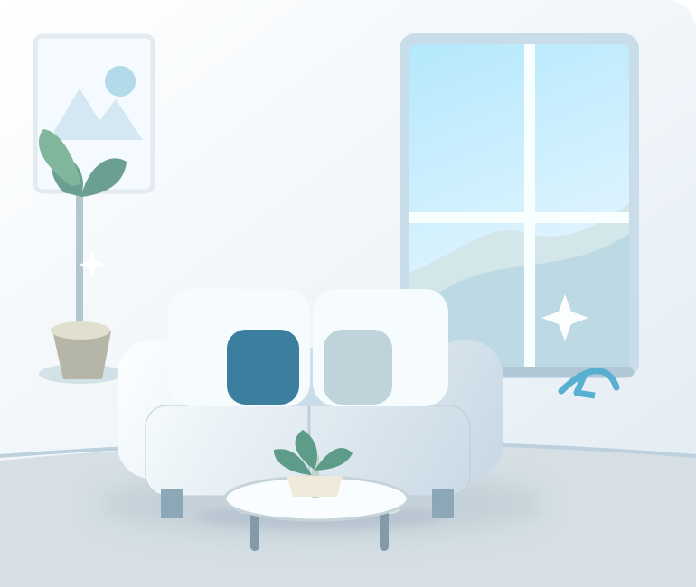

Уборка съедает выходной
Хотите вернуться в чистую квартиру, а не проводить день со шваброй?
Генеральная уборка, чистота после ремонта и химчистка мебели в Астане. Берём на себя грязную работу, а вы занимаетесь тем, что важнее.

Сначала разбираемся, что нужно привести в порядок. Затем предлагаем понятный объём работ и предварительную цену.
Хотите вернуться в чистую квартиру, а не проводить день со шваброй?
Мелкая пыль, следы работ и загрязнения требуют отдельного подхода.
Подбираем химчистку под обивку и загрязнение, не обещая невозможного.
Покажем стартовые цены, а окончательную смету согласуем до работ.
От регулярной уборки до сложных загрязнений. Для каждого случая свой состав работ и расчёт.
Кухня, санузел, поверхности, полы, детали интерьера. Объём согласуем заранее.
Регулярная забота о порядке в квартире, доме или офисе.
Строительная пыль, следы работ, поверхности и труднодоступные места.
Диваны, кресла, стулья и матрасы. Оценим ткань и загрязнение по фото.
Специализированная обработка пустого помещения, только после оценки задачи и условий безопасности.
Очистка отдельных поверхностей от сажи и копоти после проверки безопасности объекта. Объём по осмотру.
Калькулятор показывает ориентир. Точная сумма зависит от состояния помещения и списка работ.
Мы понимаем главный страх: по телефону обещали одно, а на месте оказалось другое. Поэтому предлагаем согласовать объём и условия до начала работ.
Можно прислать фото
Оценим особенности загрязнения и уточним стоимость.
Понятный перечень работ
Скажем, что входит в заказ, а что считается отдельно.
Бережный подход
Способ чистки выбирается с учётом материала и состояния.
Для химчистки, паровой очистки и специальных обработок предусмотрено разное оборудование. Подбираем метод под поверхность и условия.
Моющий экстрактор для химчистки мягкой мебели и текстиля.
Пароочиститель для совместимых с паром поверхностей.
Профессиональные моющие составы, подбираемые под конкретную поверхность.
Оборудование для специализированной обработки пустых помещений по согласованию.
Важно: озонирование не заменяет уборку, устранение источника запаха или профессиональную биологическую очистку. Во время обработки в помещении не должно быть людей и животных; возможность применения оценивается отдельно.
Никаких длинных анкет и обязательной регистрации.
Напишите площадь, вид уборки, при желании пришлите фотографии.
Обсудим состав работ, цену и доступное время.
Уточним детали, чтобы на месте не возникло недопониманий.
Осмотрите выполненные работы и дайте обратную связь.
Отвечаем заранее, чтобы у вас не оставалось сомнений.
Задать свой вопросНет. Калькулятор даёт предварительный ориентир. Итог зависит от площади, степени загрязнения и состава работ. Перед началом уборки согласуем окончательную стоимость.
У нас есть оборудование Kärcher и профессиональная химия GRASS. Комплектацию и расходники для конкретного заказа уточним при записи.
Такую гарантию было бы нечестно давать. Результат зависит от ткани, возраста пятна и предыдущих попыток чистки. Сначала оценим состояние и возможные риски.
Да, такие работы можно обсудить отдельно. Стоимость рассчитаем по фото и перечню задач.
Да, принимаем обращения по квартирам, частным домам и офисам в Астане. Возможность выезда за город и условия обсуждаются отдельно.
Озон вреден при вдыхании. Озонирование допускается только в пустых помещениях и требует соблюдения мер безопасности. Мы не рекламируем его как универсальную дезинфекцию или гарантированное удаление запахов.
Расскажите о помещении и задаче. Мы уточним объём работ и предложим следующий шаг.